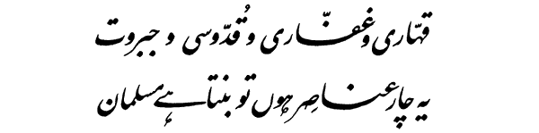
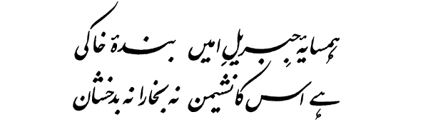
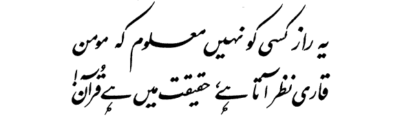
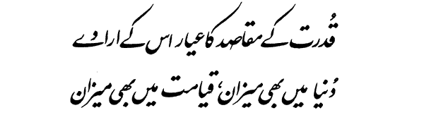
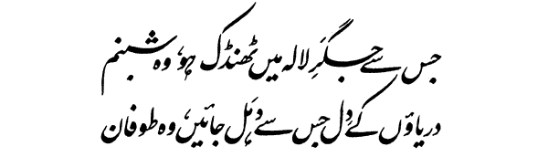
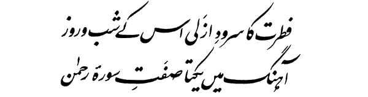
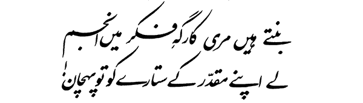

A Muslim true gets grandeur new with moment's change and every hour:
By words and deeds he gives a proof of Mighty God, His reach and power.

To rout the foes, to grant them reprieve, do pious deeds and show great might:
Are four ingredients that make A Muslim devout who shuns not fight.

With Gabriel trusted and steadfast this clay-born man has kinship close:
A dwelling in some land or clime for himself Muslim never chose.

This secret yet none has grasped that Muslim Scripture reads so sweet:
Practising rules by it prescribed, becomes its pattern quite complete.

The Faithful acts on aims and ends that Nature keeps before its sight:
In world he sifts the good and bad, In future shall judge wrong and right.

While dealing with friends and mates, He is dew that thirst of tulip slakes:
When engaged with his foes in fight, like **not allowed** strong makes rivers shake.

The charm of Nature's eternal song in Muslim's life, no doubt is found:
Like chapter Rahman of the Quran, Is full of sweet melodious sound.

Such thoughts that shine like lustrous stars my brain, like workshop, can provide:
You can select the star you like, so that your Fate this star may guide!